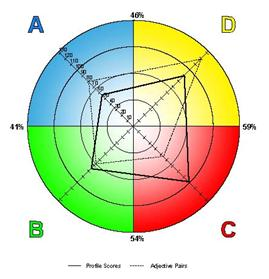

你是什么颜色的？
Xingkui@OpenFeint
有足够的钱买车,你会优先考虑？
- 性能数据
- 看重品质
- 先研究要什么型的车
- 感受和舒适性
- 满足长期计划
- 能耗效率
- 最关注友好性
- 安全性和耐用性
- 储藏空间和防锈材料
- 买一眼爱上的车
- 价格和品牌价值
- 买样车
- 受销售服务机构影响
- 实用性-车门数量
- 动感和颜色
- 和其他车比较
- 易于维护
- 关注维护需求
- 感觉选择正确就买
- 外形和前沿性
- 操作方式
- 冒些风险尝试新品牌
- 内部行李箱
- 朋友的推荐
HBDI不是什么？
HBDI不是什么？
HBDI是什么？
- HBDI是由全世界数百万人完成的一个评估工具。阐述和解释你思考，学习，沟通和决策时所愿意采取的方式。让你知道自己潜在的发展机会
- 了解自己的个人思维偏好，可以优化你的思维，决策，沟通方式，适应给定情况的能力。也会解释为什么某些人和某些人沟通比较容易
- 表明为什么你的某些教育知识或工作经验似乎不能发挥作用，而有些能令人满意。为什么你会对某些可能或爱好感兴趣并喜欢他们.
-
HBDI偏好评测图以大脑模拟图为基础，根据大脑各部分的思维偏好将大脑用四个象限表示

重新来看买车的那些关注点
- 性能数据
- 看重品质
- 先研究要什么型的车
- 感受和舒适性
- 满足长期计划
- 能耗效率
- 最关注友好性
- 安全性和耐用性
- 储藏空间和防锈材料
- 买一眼爱上的车
- 价格和品牌价值
- 买样车
- 受销售服务机构影响
- 实用性-车门数量
- 动感和颜色
- 和其他车比较
- 易于维护
- 关注维护需求
- 感觉选择正确就买
- 外形和前沿性
- 操作方式
- 冒些风险尝试新品牌
- 内部行李箱
- 朋友的推荐
大脑的思维偏好
- 逻辑
- 分析
- 基于事实
- 量化
A左本体
- 全面
- 本能
- 整体
- 综合
D右本体
- 组织
- 顺序
- 计划
- 细节
B左根部
- 人际关系
- 基于感觉
- 肢体运动
- 情绪
C右根部
各个象限的特长
- 收集事实
- 分析问题
- 理性争议
- 形成理论
- 逻辑性地解决问题
- 财务分析及决策
- 了解技术要素
- 关键性分析
- 用数字、统计、数据、精确性工作
- 看到“重点”
- 认可新可能性
- 容忍歧义
- 继承想法和概念
- 向既定方针挑战
- 将不同要素综合成新的整体
- 发明创新对问题的解决方法
- 用直观的方式解决问题
- 同时处理不同输入
- 发现被忽略的缺陷
- 根据实际情况处理问题
- 务实求是
- 保持一致的标准
- 进行稳健的领导和督促
- 阅读文档/合同中的细则
- 组织和记录数据
- 制定详细的计划和进程
- 用井然有序的方式阐述计划
- 保存原始财务记录
- 了解人际关系的困难
- 预测他人如何感觉
- 直观地理解他人如何感觉
- 领悟紧张的人际关系中的非语言暗示
- 激发热情
- 说服，调解
- 共享
- 理解情绪要素
- 考虑价值
各个象限的擅长的工作
- 律师
- 工程师
- 银行家
- 医生
- 企业家
- 剧作家
- 艺术家
- 培训师
- 规划师
- 官员
- 管理人员
- 会计
- 护士
- 音乐家
- 社会活动家
- 老师
名人们是什么象限的？

西游记-师徒四人？
认识自我
- 完整版120题，获得评测图及详细报告----$$$$$$$$$$$
讲解HBDI评测图的用法
- 我的评测图
- 实线
- 虚线
- 单象限，双象限，三象限，四象限
我认识的人可能是什么象限的？
-
环境(Environment)：
功利主义者(utilitarian)，图表(charts) -
用词(Words Userd)：
有效的(effective)，战略上(strategic) -
语气(Tone)：
言简意赅(short, to the point)
-
环境(Environment)：
视觉冲击(visual filing) -
用词(Words Userd)：
不同的(Different)，就像...(it's like) -
语气(Tone)：
愉快的(modulated)
-
环境(Environment)：
整洁(neat)，有组织的(organised) -
用词(Words Userd)：
处理(process)，证明(proven) -
语气(Tone)：
详细的(detailed)，经过深思熟虑的(considered)
-
环境(Environment)：
人的画面(pictures of people) -
用词(Words Userd)：
人们(People)，爱...(love to) -
语气(Tone)：
友好的(friendly)，易激动地(emotional)
沟通的挫折
- 不知所云
- 过于唠叨
- 含糊或不明确的指示
- 提不合逻辑的意见
- 运用时间无效率
- 缺乏事实或材料
- 太过随便
- 过度的分享个人感受
- 给人不知正确答案的印象
- 恐惧或害怕被挑战/辩论
- 重复
- 速度太慢
- 太谨慎
- 过于结构性或容易预测
- 缺乏幽默和趣味
- 缺乏灵活性或太死板
- 不了解概念或隐喻/比喻
- 太多细节
- 太多数字
- 枯燥的标题、风格
- 不明确的议事日程
- 缺乏组织性或结构
- 一直改变讨论的题目
- 一下子太多的点子
- 难以捉摸
- 速度太快
- 含糊或不明确的指示/语言
- 拐弯抹角
- 说只说到一半
- 缺乏结束
- 缺乏互动
- 缺乏眼神接触
- 缺乏个人例子
- 缺乏热情或积极性的互动
- 忽略个人感受的意见
- 缺乏个人分享的时间
- 只有事实或资料
- 没有尊重个人感受
- 过于直接的对话
- 批评性的态度
沟通的偏好
- 什么
- 为什么
- 怎样
- 谁
沟通的偏好
-
告诉他们的信息：
你的目标，重要的事实和数据。通过演示达到什么目的。
-
向他们展示的方法：
运行事实和数据，出示明晰的分析证据，紧扣要点，提供参考资料
-
告诉他们的信息：
为什么你要和他们对话，为什么这事很重要，要点是什么，这事在全局中的位置
-
向他们展示的方法：
使用色彩，使用概念化的纵观全局的图像，使用比喻，使用较快的语速和引人入胜的讲话方式
-
告诉他们的信息：
你需要多少时间，何时何地事件会发生，你需要什么资源（人员，约束），你会用什么方法（安全措施）
- 向他们展示的方法：
提供详细的信息，使用bullet points，按部就班的演示，使用简洁，清晰和格式化的格式。
-
告诉他们的信息：
你对他们有何了解，其他人有何反应，如何为他人带来利益，听众是谁，谁已经在使用
-
向他们展示的方法：
介绍每一个人，讲述客户案例，表现出热情，用表情和眼神积极与听众互动，让他们感觉和经历，接受认可各种情绪